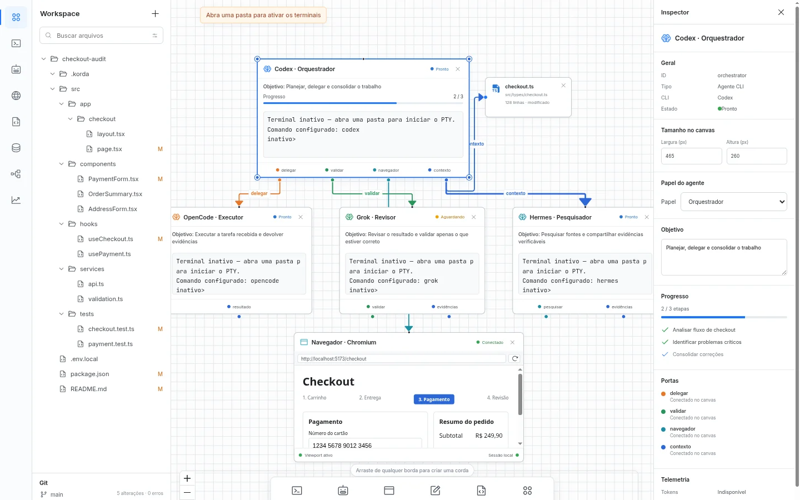
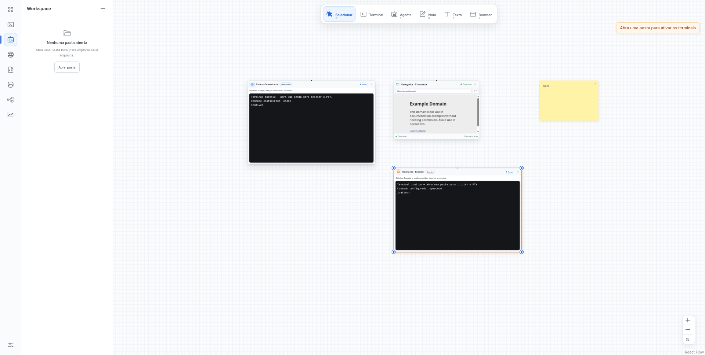
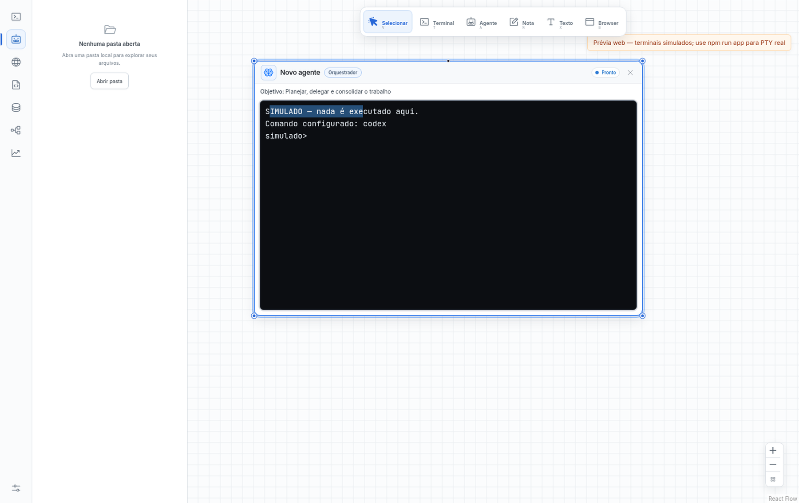
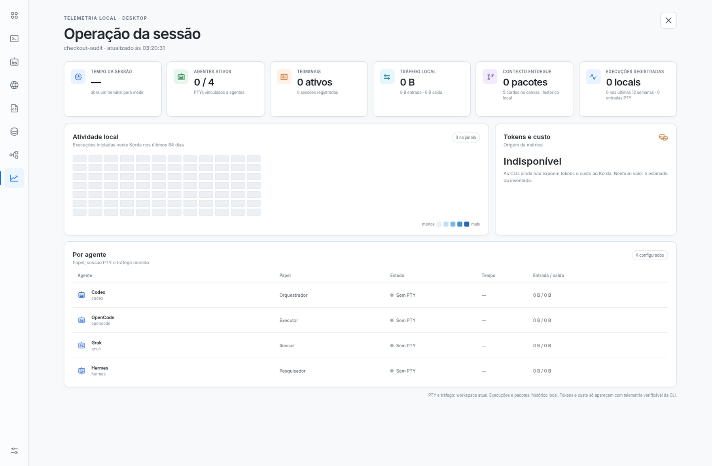

Local de verdade
Sem contas do Korda, sem analytics embutido. O estado fica no seu workspace.
Orquestração local e visual
Abra seu projeto, defina papéis e conecte CLIs de IA por cordas em um único canvas — com terminais reais na sua máquina.

Sem contas do Korda, sem analytics embutido. O estado fica no seu workspace.
O app detecta ferramentas no PATH. Nada é empacotado nem revendido.
Agentes só conversam quando uma corda autoriza. Remover a corda revoga na hora.
Produto
Do arquivo ao fluxo entre agentes — sem trocar de janela a cada passo.
Canvas
Arraste blocos, conecte bordas e acompanhe pedidos e respostas nas cordas.

Terminal
TUIs completas, parar e reiniciar no bloco. Cada CLI com identidade visual própria.

Atividade
Sessões, PTYs e atividade observada. Tokens e custos só quando a CLI informa.

Agentes
O Korda resolve o login shell e diretórios comuns. Cada ferramenta aparece com cor própria — ou digite qualquer comando livre no diálogo de novo agente.
Como funciona
O canvas é o workspace. Se já houver estado salvo, ele restaura na hora.
Escolha a CLI, o papel e puxe cordas entre blocos. Só quem está ligado conversa.
Objetivo, critério e prazo. O Orquestrador delega com ask / inbox / reply.
Com Revisor, a conclusão exige aprovação. O ledger registra o ciclo — sem transcrições.
Download
AppImage x86_64. Releases oficiais com SHA256SUMS, build em Debian Bullseye + Node 22.
Depois do download
chmod +x Korda-0.1.1-x86_64.AppImage
./Korda-0.1.1-x86_64.AppImageSem FUSE: ./Korda-0.1.1-x86_64.AppImage --appimage-extract-and-run
Código: git clone … && npm ci && npm run app (Node 22)